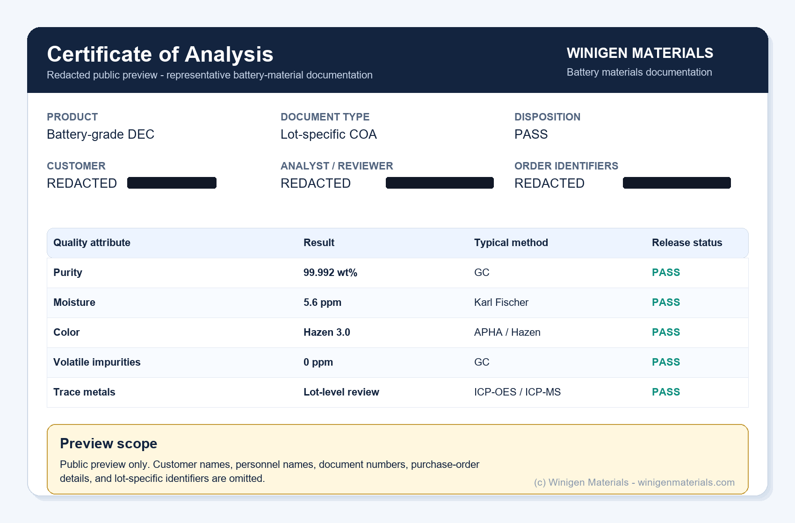
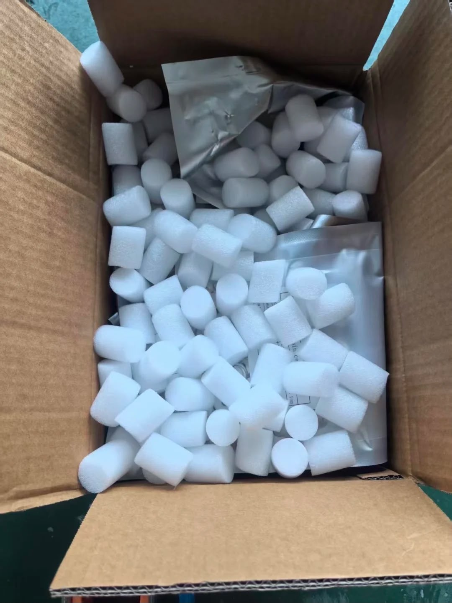

Certificate of Analysis
Moistureppm
Puritywt%
DispositionPASS
REDACTED
Lot-specific COAs, analytical release data, moisture-sensitive handling guidance, and packaging support for battery salts, solvents, additives, electrolytes, cathode materials, and solid-state materials.
Winigen Materials supports battery researchers, universities, pilot-line developers, and industrial cell manufacturers with lot-specific documentation and analytical release data for battery-grade materials.
Certificates of Analysis can include lot number, production or inspection date, retest or expiry date, disposition, storage condition, and handling notes.
Typical release data may include purity, water, acidity or HF, color, ionic impurities, metal impurities, density, conductivity, particle size, BET, tap density, and electrochemical checks where applicable.
Materials can be documented with storage and handling guidance such as sealed, dry, inert-atmosphere storage and protection from moisture.
Packaging and labeling can be coordinated based on material class, quantity, moisture sensitivity, destination, and customer handling requirements.
The public examples below are summarized from representative document formats. Customer names, analyst names, reviewer names, document numbers, and order-specific details are omitted or redacted for confidentiality.
Depending on product family and order scope, release documentation can combine analytical results, shipment records, and traceability details that help researchers and procurement teams verify the exact material lot received.
Carbonate solvent release summary
Representative solvent COA format with GC purity, Karl Fischer moisture, color, chloride, sulfate, and trace metal impurity checks.
Electrolyte additive release summary
Representative additive COA format for silicon-anode and electrolyte development work, including moisture, acidity, ionic impurities, and metal impurity review.
Formulated electrolyte release summary
Representative formulation COA format showing composition, moisture, HF, color, density, and conductivity reporting for custom electrolyte screening.
Active-material quality inspection summary
Representative active-material inspection format with particle size, BET, tap density, residual lithium, moisture, metal impurity, and coin-cell performance checks.
Confidentiality note: Public previews are intentionally redacted. Customer names, analyst names, reviewer names, purchase order information, and order-specific identifiers are not published on this page.

Battery materials quality documentation is most useful when it follows the material through production, inspection, testing, packaging, and shipment.
Test packages depend on the product family. The table below summarizes common quality attributes used for battery-grade solvents, electrolyte additives, salts, custom electrolyte formulations, active materials, and solid-state electrolyte materials.
Testing scope, acceptance criteria, and release specifications vary by product family, grade, supplier lot, customer requirement, and intended application.
| Quality Attribute | Representative Methods | Why It Matters |
|---|---|---|
| Moisture | Karl Fischer titration | Water affects salt stability, HF generation, SEI/CEI formation, and cell reproducibility. See why moisture control matters in battery material screening. |
| Purity / organics | GC | Confirms solvent or additive purity and volatile impurity profile. |
| HF / acidity | Acid-base titration | Relevant to electrolyte stability, transition-metal dissolution, and high-voltage cell behavior. See the LiPF6 degradation and salt-selection article. |
| Metal impurities | ICP-OES / ICP-MS | Trace metals can influence self-discharge, parasitic reactions, and gas generation. |
| Color | APHA / Pt-Co / Hazen | Practical screen for discoloration, oxidation, or contamination. |
| Conductivity / density | Conductivity meter, densitometer | Useful for electrolyte formulation release and batch-to-batch reproducibility. |
| Particle size | Laser diffraction | Important for slurry behavior, powder handling, electrode uniformity, and solid-state electrolyte screening. See how particle size affects solid-state electrolyte screening. |
| Surface area / tap density | BET, tap-density analyzer | Affects reactivity, binder demand, packing behavior, electrode loading, and processing fit. |
| Electrochemical release | Coin-cell test where applicable | Provides an application-relevant check for active materials and selected battery materials. |
Poor control of moisture, metallic impurities, particle size, acidity, or electrolyte composition can contribute to:
Therefore, analytical release documentation is not simply paperwork. It is an important part of ensuring reproducible battery research and manufacturing.
Different battery materials need different release checks. This summary helps customers understand what documentation topics are commonly relevant before requesting a COA, SDS, or specification review.
| Product Family | Common Documentation Focus |
|---|---|
| Battery solvents | Purity, moisture, color, volatile impurities, ionic impurities, and metal impurities. |
| Electrolyte additives | Purity, moisture, acidity, chloride, sulfate, trace metals, and storage condition. |
| Custom electrolytes | Composition, moisture, HF or acidity, color, density, conductivity, and formulation notes. |
| Cathode and anode materials | Particle size, BET, tap density, residual lithium, moisture, impurity profile, and electrochemical checks. |
| Solid-state electrolytes | Particle size, ionic conductivity, electronic conductivity, moisture sensitivity, powder handling, and lot-level specifications. |

Battery-grade solvents, additives, salts, electrolytes, solid-state powders, and active materials often require moisture-aware packaging and careful shipment coordination. Packaging configuration depends on material class, quantity, destination, and handling requirements.
Winigen Materials coordinates packaging and labeling requirements based on the material type, shipment quantity, destination, and applicable carrier or regulatory requirements.
Yes. Customers can request available COA examples, SDS information, specification details, or representative release documentation before placing an order. Lot-specific COAs are tied to the actual material lot supplied.
Documentation scope can often be coordinated based on product family, customer application, shipment quantity, and available analytical data. Requirements should be discussed before ordering when a project needs specific release attributes.
Yes. Public examples and previews are redacted. Customer names, analyst names, reviewer names, purchase order details, document numbers, and order-specific identifiers are not published on this page.
Representative electrolyte release data may include composition, moisture, HF or acidity, color, density, conductivity, and formulation notes. Testing scope depends on the electrolyte system and customer requirement.
No. Test packages vary by product family, grade, supplier lot, customer requirement, and intended application. Solvents, additives, custom electrolytes, active materials, and solid-state electrolytes use different quality attributes.
Tell us the material, target quantity, destination, and application. We can help provide available documentation and discuss packaging, storage, and handling requirements before shipment.